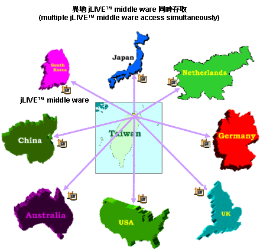
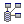
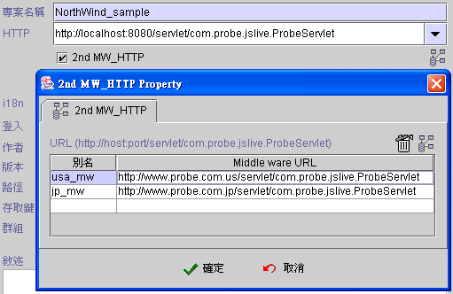
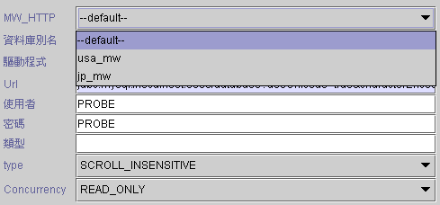

|
15.3 異地應用伺服器同時存取 (multiple application servers access simultaneously)
建立異地
jLIVE™ middle ware (create secondary jLIVE™ middle ware) 跨國性與多分公司的企業，資料庫系統通常是獨立存在於各據點，網際網路應用程式不但要能處理單一據點資料處理，還要能適時地同時存取各據點的資料訊息。 jLIVE Builder™ 允許在開發應用程式時，同時連接異地的應用伺服器 (jLIVE™ middle ware)，並存取異地應用伺服器所連結的資料庫系統，跨國性與多分公司的企業，隨時可透過應用程式，統計、分析、處理各據點資料。 
建立異地 jLIVE™ middle ware (create secondary jLIVE™ middle ware)
在 jLIVE Builder™ 應用程式控制面版，選取專案，輸入主要 HTTP 後，核取 (check) 2nd MW_HTTP 並按下設定鍵。在 2nd MW_HTTP property 設定視窗中，建立異地 jLIVE™ middle ware 。設計師可以按下測試連結建立的 jLIVE™ middle ware。在按下確定鍵後，系統會嘗試連結每一個已建立的 jLIVE™ middle ware，並回覆連結的結果訊息。如果遠端jLIVE™ middle ware 未開機無法連結或有任何的錯誤，系統會出現測試連結失敗訊息視窗，並詢問設計師是否暫時忽略連線結果繼續設定作業。

使用異地 jLIVE™ middle ware 的資料庫系統 (2nd jLIVE™ middle ware database)
建立異地 jLIVE™ middle ware 後，使用異地 jLIVE™ middle ware 的資料庫系統 ，只要在新增資料庫時選擇此資料庫系統安置在那一個 jLIVE™ middle ware 即可。MW_HTTP 的選項中列示所有可用的異地 jLIVE™ middle ware 別名，其中 --default-- 為主要 jLIVE™ middle ware 的別名。

應用程式開發時，設計師以資料庫別名引用資料檔案，系統內部會依據資料庫節點所設的 MW_HTTP 別名，至相關的 jLIVE™ middle ware 取得資料庫檔案存取服務，設計師不需做任何額外的設定。
Copyright © 2001~ 2004 Probe Technology . All Rights Reserved. Questions, comments, and suggestions to Service@probe.com.tw |